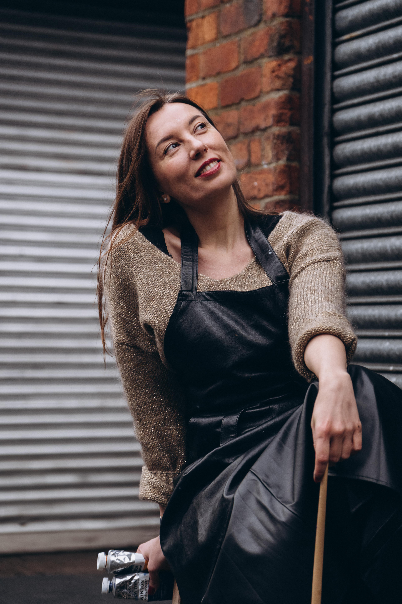

Behind the Canvas
Olena (Alyona) Voronenko is a Ukrainian/Welsh contemporary artist currently based in Cardiff, UK.
Originally from Kharkiv, Ukraine, she graduated from the State Academy of Design and Arts in 2022 after a previous career in project management. Her transition to a full-time artistic practice was driven by a long-standing commitment to painting and a desire to explore a more personal and meaningful form of expression.
Working primarily in oil, Alyona creates paintings that combine figurative realism with decorative abstraction. Her artistic language is inspired by femininity, nature, dreams and the emotional landscapes that exist between reality and imagination. Rich colour palettes, layered textures and experimental techniques play an essential role in her work, creating a sense of mystery, beauty and emotional depth.
Alongside classical painting methods, she develops her own techniques and continuously experiments with materials and surface treatments, seeking new ways to express mood and atmosphere.
Having experienced the outbreak of war in her hometown of Kharkiv, Alyona's work is deeply influenced by the fragility of life and the enduring human need for beauty, hope and inner harmony. Rather than depicting conflict directly, her paintings create spaces of contemplation and emotional refuge.
Her works have been exhibited in national and international exhibitions and are held in private collections.
International Exhibitions
- 2023-2025 — Many local exhibitions in the UK
- 2022 — Sarlat (France)
- 2024 — Varna (Bulgaria)
Education & Awards
- Graduated from Kharkiv State Academy Design and Arts (Fine Art) 2022
- Main sponsors’s Prize in Kyiv (Барви життя) 2021
- 1st place in international competition “Golden time talent”
- Member of CASW (Contemporary Art Society For Wales)